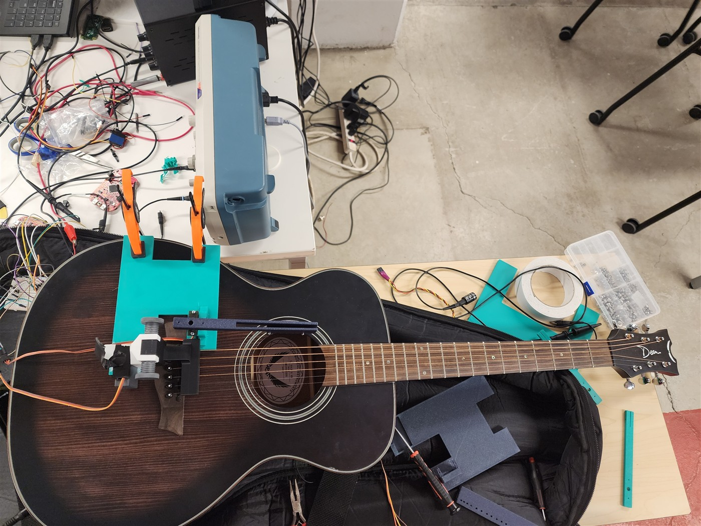
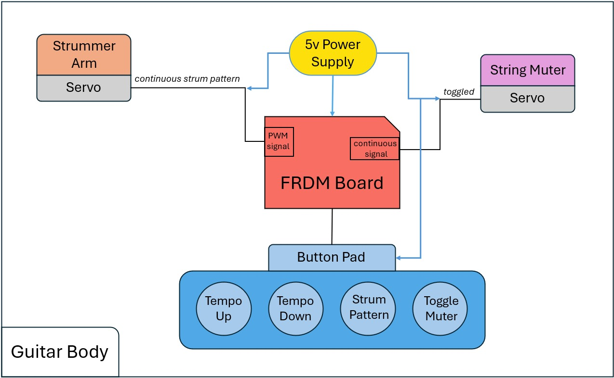
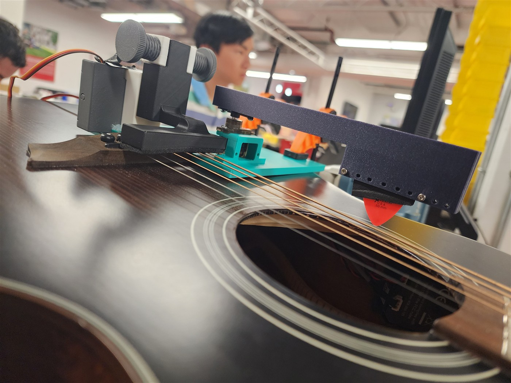
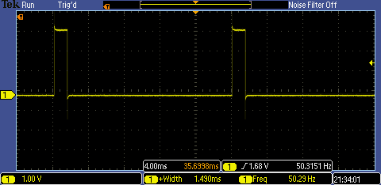
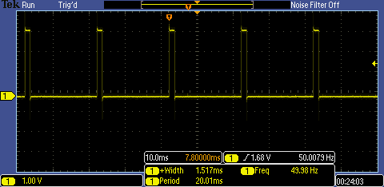

Lord of the Strings
Automated, programmable palm-muting and strumming patterns for the guitar
By Andrew Lin, Nathan Varghese, and Adin Moskowitz
In May 2025, I designed a robotic guitar strummer along with Nathan Varghese and Adin Moskowitz for ECE3140: Embedded Systems. This was by far one of my most ambitious projects. Dubbed the Lord of the Strings, this guitar robot implements multiple strumming patterns in addition to palm muting, a common technique used to mute the strings for a punchy feel. The project’s success would not have been possible without the mechanical expertise of my peers working in parallel as I figured out how to write all the code files. This project shows what can be done in under 30 hours of work in a team, from brainstorming to real-life conceptualization.
Overview
The Lord of the Strings is more than just a guitar strummer. It's a guitar-playing robot that drives multiple servo motors in real time to dynamically strum and palm mute strings in programmable patterns. This system demonstrates precise timing and motion control just by using simple hobby servos.
Palm muting, a technique used by advanced guitarists to dampen strings and enhance rhythmic articulation, is a key feature of this system. The integration of both palm muting and strumming actions on an acoustic guitar introduces unique mechanical and timing challenges, such as precise PWM-based servo control and tight synchronization between strumming and muting actions.
Our original goal was to program a microcontroller to control both the strumming speed and style. The current implementation allows users to switch between pre-programmed strumming styles and toggle palm muting using external buttons. To achieve precise strumming patterns, the TPM (Timer/PWM Module) is used to drive the servos and the PIT (Periodic Interrupt Timer) to schedule strumming and muting actions with precise timing.

My Contributions
I was largely responsible for designing the software architecture of the system, with some help from ECE3140 lab materials on timer interrupts and system clock management. This involved sending two hardware PWM signals out to control two different servos, one for strumming and one for palm muting using the Timer PWM Module (TPM). A scheduler was created using one FSM which combines strumming and muting motions with predefined durations. GPIO interrupts were also used to receive user input, such as for switching the pattern and toggling the palm muting servo.
Hardware and Software Architecture

Mechanical Approach
This servo-controlled guitar robot integrates both strumming motion and palm muting through a compact mechanical system consisting of three main components. First, the mounting structure consists of a PLA-printed plate secured near the bridge of the guitar using two adjustable clamps. This plate serves as the base for securing two hobby servos: one for strumming and one for muting.
The strumming servo is attached to a PLA-printed arm with a clamp for the guitar pick. This arm is designed to sweep across all six strings in upstroke/downstroke motions.
The muting servo uses a 3D-printed linear actuator mechanism that moves a horizontal bar up and down to simulate palm muting. This linear actuator converts rotary servo motion to linear motion using a gear connected to a linear bar. The bar contains a damping material (felt or foam pad) to mute the strings.

Electrical Approach
The system is powered by a 5V power supply that feeds two MG90S hobby servos and the FRDM-KL46Z board. Each servo's signal is driven by TPM-generated PWM outputs via the GPIO pins. Four push buttons are wired between ground and the internal pull-up resistors on the GPIO pins, along with a 0.1 µF capacitor for debouncing presses. These buttons control the tempo, pattern, and mute toggle.
Software Approach
Continuous, hardware-driven PWM signaling is used for servo control through the KL46Z's TPM (Timer/PWM Module). This module is standalone and offloaded from the CPU, resulting in continuous servo operation and parallel processing on the CPU. Initially, the team was inspired by Lab 2's implementation of an assembly-level PWM delay to achieve delay precision. However, the discovery of the TPM connected to certain GPIO ports seemed more promising and reliable as a hardware implementation of delays, as well as maintained continuous PWM signals without using the CPU. An implementation of PWM using TPM can be found in pwm.c.
The final design involves one FSM defined by a ComboStep[] array (pattern), unifying strumming and muting motions under one schedule. The schedule contains ComboStep steps that control the strumming state (StrumState), muting state (MuteState), and duration of the step. As defined in strummer.h, the StrumState enumeration controls the strumming servo position and consists of three possible states: STRUM_DOWN, STRUM_UP, and REST. In the same header file, there are three possible MuteState states that control the position of the mute bar: MUTE_NOCHANGE (which is the default state if no state is defined at instantiation of Step), MUTE_ON, and MUTE_OFF.
The PIT timer is configured to trigger an interrupt every 10ms, serving as the clock for the scheduling of strumming/muting steps. Inside the interrupt service routine (ISR), the scheduler periodically checks whether the current ComboStep is complete by checking remaining_ms. If there is still time left (>10 ms), then this variable is decremented by 10ms. Once the duration has been fulfilled, it advances to the next step in the pattern by calling strummer_update(), which updates the global states and variables for the step counter and duration. This acts as a real-time task scheduling algorithm, dealing with multiple real-time processes and context switching to other states by a defined schedule without necessarily busy-waiting on the CPU.
The onboard buttons are used to toggle between different programmed styles, palm mute, and change tempo. Using the GPIO ISR, interrupts are fired on the falling edge (i.e. when the button is pressed and sending the signal to ground). These interrupts trigger the specific toggles as mentioned earlier.
Key Technical Challenges and Engineering Decisions
Major challenges were faced with configuration of the hardware timer interrupts and system clock for generating the desired PWM signal for the servos. Eventually, we were able to calculate the correct parameters for configuring the timer that controls the hardware PWM signal.
Pulse-Width Modulation Using Timer/PWM Module
Sending an accurate PWM signal to the servos was a primary goal of this project. To debug the signal, an oscilloscope was hooked up to the PWM signals on pins PTB18/PTB19, measuring the period, frequency, and pulse width. Early on, there were issues deriving the correct clock period for the TPM module, and consequently the PWM signal.
In theory, the external oscillator is more reliable, as the core clock could potentially be affected by CPU processes. Thus, different base clock frequencies were tested with the TPM module, including the core clock and the external 8 MHz crystal oscillator. However, using the external oscillator did not produce any signal. The core clock remained the only viable option.
Initially, TPM had been set up with a 20.97 MHz core clock base and a 128 prescaler, producing tick division values that were not necessarily integers and had low resolution with higher prescalers.

Instead, changing the program to run on a 48 MHz core clock and a 64 prescaler yielded more accurate results, providing a wider range of precise duty cycles and a modulus value of ~15,000 (well under the 16-bit limit of 65,535). However, the actual core clock was running at 47.972352 MHz, so the modulus and CnV values were not exact integers and had to be rounded, slightly reducing accuracy.
The initial MOD value of 14991 (derived from the formula) produced an experimental PWM frequency of 50.3 Hz, which was slightly off. Using the oscilloscope, the frequency and pulse width were measured in real-time, and the MOD value was adjusted via trial and error to achieve a near-perfect 50 Hz frequency, as shown below.

PIT Interrupts
Originally, we mistakenly assumed that the PIT timer used the full 48 MHz system core clock. As a result, strumming patterns played at half speed—a quarter note at 120 BPM played as if at 60 BPM. Dividing the system core clock by two to reflect the 24 MHz bus clock (used by PIT) corrected the tempo issues.
Support for Multiple Patterns and Button Toggles
With accurate timing established by the PIT scheduler, the next goal was enabling pattern switching and muting via buttons. Buttons connected to port interrupts were used to toggle between patterns and muting states.
Initially, button presses failed due to incorrect wiring to high voltage. Port interrupts trigger on a connection to ground, so the button was rewired with one side to the port and the other to ground. While this fixed the logic, multiple presses were sometimes registered for a single press. A capacitor was added in parallel for debouncing, which reduced—though did not eliminate—the issue. Nevertheless, the buttons functioned as needed for switching between strumming patterns.
Mechanical Challenges
One of the main challenges we faced in this project was refining the design of the strumming arm. It took several iterations to resolve issues related to mechanical noise, instability, and ensuring the arm had the proper range of motion without interfering with the muting components. We also encountered clearance issues with the pick, as it initially couldn't reach the strings—this required careful adjustments to address positioning and reach. Assembling the servo mounts onto the main mounting plate was also a challenge; it took time to finalize optimal locations for functionality and support.
Testing, Results, and Lessons Learned
At least three different strumming/muting combo patterns were tested and produced the expected programmed patterns. Based on the oscilloscope measurements, the PWM signal produced with the expected modulus value for the timer did not produce the exact expected frequency. Though slightly off, it was within less than 1% error. We adjusted for this by changing the modulus value by a few counts.
Lessons Learned
I wish we had more accurately measured where the servo mounts needed to go beforehand, as the mounting plate took a long time to print—making redesigns and reprints time-consuming. Additionally, the guitar neck is not exactly flat, but rounded. This became apparent when our muting mechanism only effectively muted the top three strings, less so on the bottom strings, because they are positioned vertically lower due to the guitar’s design. We also had to CAD a custom servo mount to ensure the servo stood upright rather than laterally for proper strumming motion.
One thing I wish we had known earlier was the bioacoustic effect of the servo and pick—the vibrations produced a surprisingly loud mechanical noise. Unlike strumming by hand, where your fingers absorb much of the vibration and you mostly hear the strings, the strumming arm amplified both the string and mechanical sounds. Understanding that earlier would have informed our material and design choices for quieter operation. These experiences highlighted the importance of planning for mechanical tolerances, acoustic behavior, and clearance early in the design process.
Future Improvements
While the final system successfully allows the user to control muting and switching between pre-programmed patterns, there are several opportunities for improvements, both in user interface design and in enhancing the realism and reliability of the strumming/muting mechanism.
Momentum in the strumming arm caused the strumming servo to keep moving back and forth (jitterring) within ~5 degrees of the expected position. Ideally, the arm should simply remain in a single position for a specified duration, but the arm was not sufficiently damped to prevent the jitter from ocurring.
Team Acknowledgments
We organized tasks into three main categories: mechanical design, electrical setup, and software design.
- Andrew primarily worked on coding and debugging the software to achieve the desired servo motions and handle button inputs.
- Adin focused on the mechanical design for the string muting system and also contributed to code debugging and testing servo signal generation.
- Nathan designed the servo-controlled strumming arm, the servo mount, and the mounting plate that clamps onto the guitar. He also implemented strumming pattern logic and helped clean up and organize the codebase.
We drew inspiration for the mounting plate and strumming motion from this guide: AutoStrummer – Instructables
We also used AI coding assistants like ChatGPT and GitHub Copilot to help write and debug parts of the code. These tools provided helpful high-level guidance and structure, but they lacked specific knowledge of hardware modules like TPM and clock configuration. As a result, significant effort was still required to debug, tune the PWM signals, and achieve reliable servo behavior.
Go Deeper
The original technical report from Spring 2025 for the ECE3140 final project is linked below. In addition, you can explore the source code and see how you can program a strumming pattern!